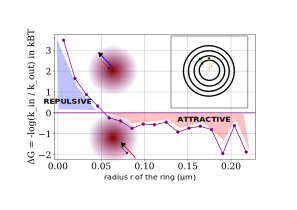

Single Particle Tracking – DNA Repair Condensates
Exploring molecular dynamics within phase-separated repair domains.
Presented by: Adrien Berard
Supervised by Judith Miné-Hattab and Asaki Lejars
Outline
- A – Introduction
- B – Results
- C – Theory
- D – Conclusions & Take‑aways
A. Introduction
- Condensates: Membraneless organelles formed via phase separation
- DNA repair foci: Concentrated protein domains repairing DNA damages
- Key proteins: p53, 53BP1, FUS, PARP1, ...
- Role: Organize and enhance repair machinery
A. Introduction – Dynamics & Imaging
SPT Methodology
- Labeling: Endogenous or transient fluorescent tags
- Sparse expression: Isolate single molecules
- Fast imaging: 100 Hz acquisition
- Sub-pixel localization & tracking: via FreeTrace from Junwoo Park
SPT-PALM Methodology
.jpg)
Single particle tracking photoactivated localization microscopy setup
B. Results – Mobility Patterns
- Heterogeneous mobility: Multiple diffusion modes
- Lower mobility inside condensates: Due to transient interactions with scaffold DNA
- Evolution over time: Phase transition, ripening & fission/fusion events
p53 GFP Recruitment Dynamics

Time-lapse analysis of p53-GFP recruitment to DNA damaged region
Cell Density Evolution

IR-induced p53 density changes in nucleus over time — not enough traces → switched to 53BP1
B. Results – Key Findings Summary
- 53BP1: Slower recruitment, higher residence time
- p53: Faster recruitment, dynamic partitioning
- Condensate heterogeneity: Spatial and temporal variations
- Thermodynamic driving forces: Quantified energy landscapes
C. Theory & Analysis
Diffusion Model
\[ \text{MSD}(\tau) = 4 D \tau^\alpha \]
- D: Diffusion coefficient
- α: Diffusion type (sub-/normal/super-)
Partitioning Thermodynamics
\[ \Delta G = -k_B T \ln\left(\frac{k_{\text{in}}}{k_{\text{out}}}\right) \]
- ΔG: Free energy driving partitioning
- kin / kout: Entry/leaving shell or condensate rates
Thermodynamic Analysis
Free energy changes (ΔG) driving protein partitioning
Radial displacement anlysis

Radial displacement in function of the radius at the center of mass either in the condensate or outside. From 53BP1 data.
Effective Potential Analysis from Langevin equation integration
Effective potential landscape within repair condensates
$$ \nabla U(\mathbf{r}) = -\mathbf{F}(\mathbf{r}) = \frac{f(\mathbf{r})}{\Delta t} \, \gamma = \frac{k_B T}{D} \frac{f(\mathbf{r})}{\Delta t} $$
Mean Diffusive Residence Time
\[ \tau = \frac{l^2}{2nD} \]
- τ: Mean residence time
- l2: Squared condensate diameter
- n dimensions
- D: Diffusion coefficient
Mean Diffusive Residence Time

Mean residence time if one only account for diffusions
D. Conclusions & Take‑aways
- SPT reveals dynamic condensate behavior
- Condensates exhibit diverse mobility regimes
- Protein-specific dynamics influence repair pathways
- Modeling links diffusion to thermodynamics
SPT is a powerful tool for dissecting DNA repair mechanisms in live cells
Thank You
Questions?
Supplementary Information
- FreeTrace: Custom Python tracking tool by Junwoo Park
- Fluorophores: p53-GFP, Halo/PA-JF
- Analysis environment: Python, Fiji
- Biological model: RPE1 and U2OS cells, damaged with laser irradiation
Detailed code and full datasets available upon request
Western Blot p53-Halo
Heterozygous confirmation via WB
Electrophoresis plasmid

Plasmid size confirmation via electrophoresis